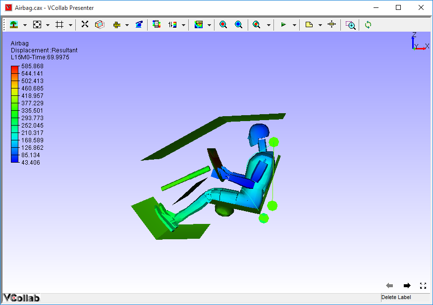

Open File
The Open File menu allows users to load a CAX file in VCollab Presenter.
The CAX file is loaded with following defaults
- Standard front view or first user defined view point state.
- First CAE result if CAE information exists for the model.
- Legend with default CAE information.
Note:
- If an environment variable VCT_COLORPLOT_OFF is set with value 1, then the model will be loaded faster without color plot. (How to set an environment variable?)
- Users can store current session information and make it available for subsequent sessions using Profile.
Steps to load a CAX file
- Right click in the Viewer Window, to open the Viewer Context menu .
- Select the Open File option from the viewer context menu, which opens the File browser dialog as shown below.

- Select a CAX file and click Open.
- The selected file will be loaded in Presenter.
- By default, Presenter loads first CAE result in the Result list if CAE information exists.
